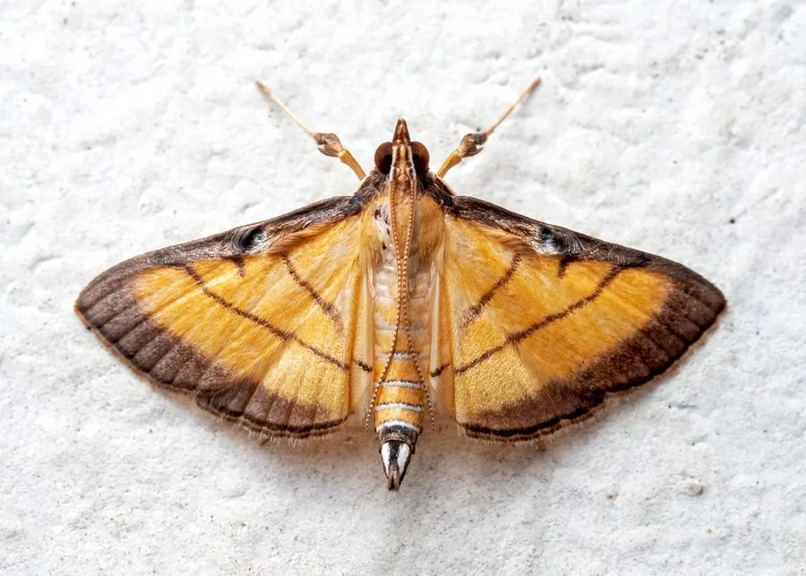

昆虫 · 动物界
稻纵卷叶螟 Cnaphalocrocis medinalis

迁飞性水稻害虫，幼虫把稻叶卷成筒状并取食叶肉，形成白色条斑，中国南方稻区常暴发成灾。
- 分类
- 门节肢动物门纲昆虫纲目鳞翅目科草螟科属纵卷叶螟属
- 栖息环境
- 水稻田，幼虫在卷起的稻叶中生活
- 地理分布
- 中国各稻区，以及日本、东南亚和南亚
- 保护级别
- 暂无评估；水稻重要害虫
物种志
稻纵卷叶螟成虫翅展约 1.6–2 cm，前翅黄褐色，有三条褐色横线，中间一条较短；后翅也有两条横线。幼虫体长约 1.5–2 cm，身体细长，淡绿色，头部褐色，行动活泼，受惊时会迅速后退或吐丝下垂。
它主要危害水稻，幼虫孵化后爬入心叶，吐丝把叶片卷成筒状，躲在里面取食叶肉，留下白色条斑，严重时全田叶片发白，影响光合作用和产量。稻纵卷叶螟具有迁飞性，夏季随季风向北迁飞，秋季南迁，在中国南方一年发生多代。防治以监测预警、保护天敌、性诱剂和科学用药为主，在低龄幼虫期施药效果最好。
形态与习性
- 食性幼虫取食水稻叶片叶肉
- 翅展成虫约 1.6–2 cm，幼虫约 1.5–2 cm
- 危害卷叶取食，形成白色条斑，严重时全田发白
- 迁飞具有迁飞性，随季风南北迁移
- 防治监测预警、性诱剂、保护天敌和低龄期用药
趣味知识
- 稻纵卷叶螟的幼虫会把稻叶卷成筒状，躲在里面吃叶肉。
- 受害的稻田会出现白色条斑，严重时一片发白。
- 它是迁飞性害虫，会随季风从南方迁到北方稻区。